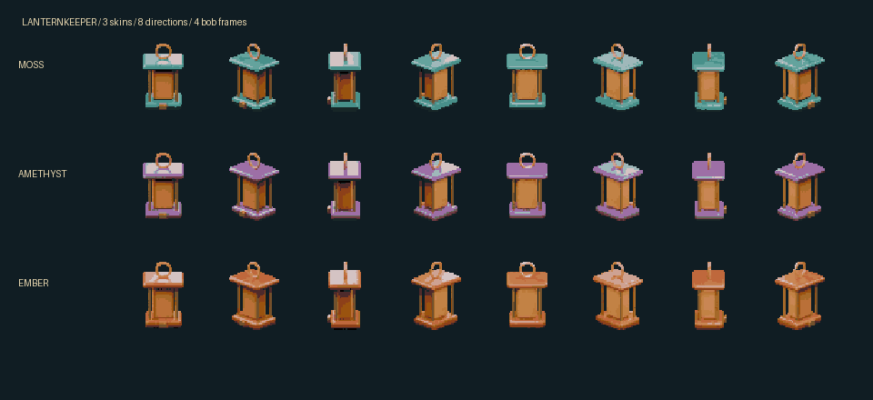

Carry a little warmth into the woods. A playable scene built from one editable lantern, three materials, and a locally generated world.
Move with arrows or WASD, or tap a destination in the clearing. Collect all six lanterns.
96 sprites share a fixed 64-pixel grid and colour palette. Camera direction and animation come from Blender, so the shape stays consistent across frames.

Editable Blender scene · Animated GLB · Sprite atlas · Frame coordinates · Workflow and findings